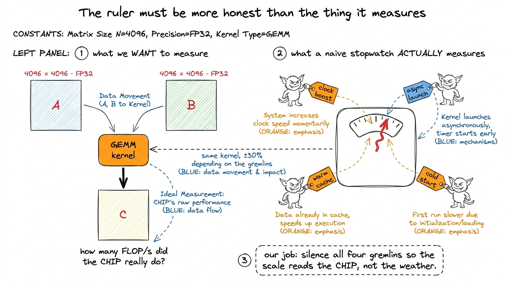
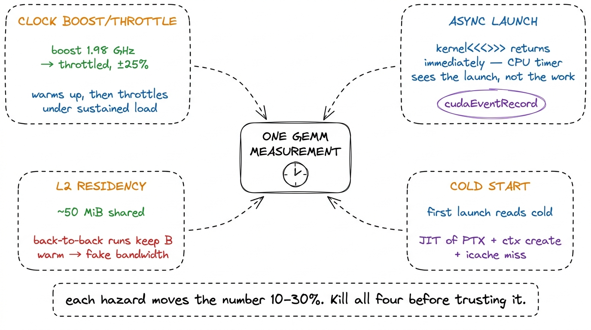
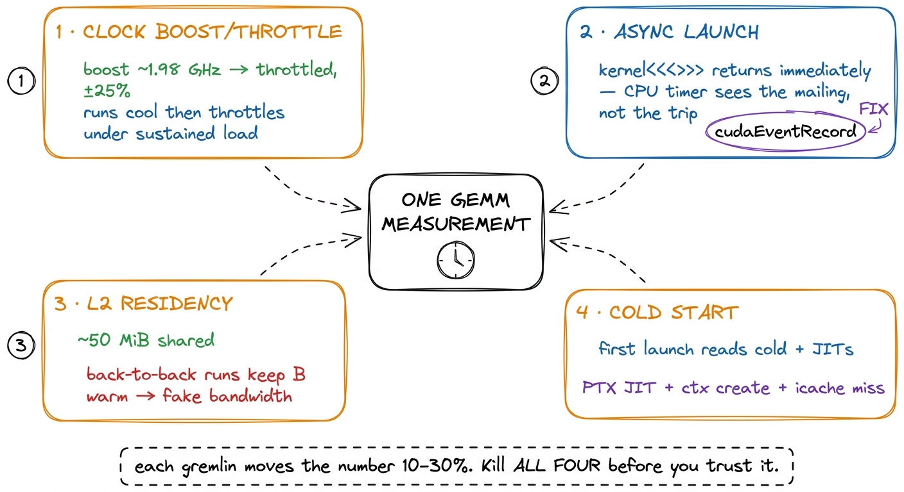

Benchmarking without lying to yourself
Every number on this site — the humiliating 1.3% of cuBLAS the naive kernel earns, the 93.7% the warptiled one earns ten steps later — is a claim about reality. The whole ladder is only as trustworthy as the ruler I measure it with. And a GPU is an almost adversarially easy machine to fool yourself with: it boosts its own clocks, caches the very data you meant to read from HBM, and hides launch latency behind asynchronous queues. Get the harness wrong and you will spend a weekend "optimizing" a kernel whose speedup was really just a warmer L2 or a lucky clock bin. This article is the boring, load-bearing discipline that makes the fun part honest.
I want to build the benchmark before the first kernel, because the benchmark is what tells me whether a change worked. If I cannot trust the ruler, the entire predict-then-measure loop from the three regimes collapses into vibes.
What "one measurement" has to survive
Say I want the throughput of a single GEMM kernel on an N = 4096 square problem. The naive plan — record a timestamp, launch the kernel, record another, subtract — is wrong in at least four independent ways, and each one moves the number by tens of percent:
- The clocks are not what you think. An H100 SXM5 does not run at a fixed frequency. It boosts when cool and idle, then throttles under sustained load as it hits power and thermal limits. The first launch and the two-hundredth launch of the same kernel can differ by 20–30% purely from clock drift.
- The GPU is asynchronous.
kernel<<<...>>>()returns to the CPU almost immediately — it only enqueues the launch. A CPU-side timer measures launch latency, not execution. - The L2 lies to you. The H100's L2 cache is ~50 MiB.1 Physically it is two partitions joined by a crossbar, with a 128 B line split into 4×32 B sectors. The 50 MiB is shared across the whole chip, so whether your working set "fits" depends on how many other CTAs are live — one more reason to flush deterministically rather than reason about it. Two
4096²FP32 matrices are 128 MiB, so a single GEMM's inputs mostly spill — but run the same kernel back-to-back a hundred times and a meaningful slice of B stays resident, quietly inflating your bandwidth and making a memory-bound kernel look better than it is in production.

figure rendering · The memory hierarchy the benchmark has to respect. Without a flush, re- Cold start. The very first launch pays for context creation, JIT of any PTX, and instruction-cache misses. Time that and you are benchmarking the driver, not the kernel.

figure rendering · The four ways a naive GPU timer lies. A defensible benchmark neutralizFour hazards, four fixes. The rest of this article is those fixes, in the order I apply them in the harness.
Fix 1 — lock the clocks
Boost is the enemy of reproducibility. Before I measure anything I pin the GPU to a fixed frequency and put it in persistence mode so the driver state does not reset between runs:
sudo nvidia-smi --persistence-mode=1
sudo nvidia-smi --lock-gpu-clocks=1980 # pick a sustainable SM clock
sudo nvidia-smi --lock-memory-clocks=2619 # from -q -d SUPPORTED_CLOCKSThe exact SM frequency matters less than the fact that it is the same across every kernel in the ladder. If kernel 3 boosted to 1.98 GHz and kernel 4 throttled to 1.5 GHz, the "speedup" between them is partly a frequency story, and I would be attributing a clock difference to my code.2 Lock to a clock the card can hold under sustained tensor load, not the max boost bin — otherwise it throttles mid-run and you are back to a moving target. I also log clocks_throttle_reasons.active; if it ever reports anything but Idle/GpuIdle during a measurement window, I throw the run out. I keep an eye on nvidia-smi --query-gpu=power.draw,clocks.sm,clocks_throttle_reasons.active during a run; if throttling ever fires inside a measurement window, that measurement is discarded.
There is a philosophical caveat worth stating out loud: locked clocks measure architectural efficiency, not what a user gets in a hot datacenter where the card boosts and throttles freely. Both are legitimate questions. For a kernel ladder — where I need to attribute every delta to a code change — locked clocks are non-negotiable. For a "what will production feel like" number, you also want an unlocked run. I report the locked number and note it as such.
Fix 2 — time on the GPU with events
The CPU cannot see when a kernel actually finishes, so I stop asking it to. CUDA events are timestamps recorded into the GPU's own stream; the device fills them in as it reaches them, and I read the delta afterward. The pattern is exactly the one everyone converges on:
cudaEvent_t start, stop;
cudaEventCreate(&start);
cudaEventCreate(&stop);
cudaEventRecord(start); // enqueued into the stream
sgemm<<<grid, block>>>(N, A, B, C);
cudaEventRecord(stop); // enqueued after the kernel
cudaEventSynchronize(stop); // block CPU until 'stop' is reached
float ms = 0.0f;
cudaEventElapsedTime(&ms, start, stop);The key is that start and stop are ordered inside the stream, so the interval brackets exactly the kernel's execution on the device — no launch latency, no CPU scheduling noise. cudaEventElapsedTime has ~0.5 µs resolution, far below a 4096³ GEMM's runtime but a real error source if you ever time a sub-microsecond kernel. The lone cudaEventSynchronize is the only CPU-side wait; I never sprinkle cudaDeviceSynchronize between launches inside the timing loop, because that serializes the stream and adds overhead I did not mean to measure.
Fix 3 — warm up, then flush the L2 between every run
These two fixes fight each other, and getting the interaction right is the crux.
Warmup solves cold start: I launch the kernel a handful of times before the timing loop starts, discarding those results, so context creation, PTX JIT, and instruction-cache population are all paid for by the time the clock starts. The salykova harness handles this more gracefully than a fixed count — it runs 1000·exp((1024−N)/3100) total replays and then averages only the second half, so small problems get more repeats and the clocks have stabilized before any run counts.3 For N = 4096 that formula gives ~371 replays and measures the last ~185. The point is not the exact constants; it is that warmup count should scale so that even a fast kernel runs long enough for clocks and caches to reach steady state before you start believing the numbers.
But warmup reintroduces hazard 3. If I run the same kernel 185 times back-to-back, the L2 stays warm and my "HBM read" is partly an L2 read — the kernel looks faster than it will ever be on the first, cold call that a real workload issues. So between every timed iteration I evict the L2 by writing a buffer at least as large as the cache:
// allocate once, sized to the full L2 (query cudaDeviceProp::l2CacheSize)
cudaMemsetAsync(l2_flush_buf, 0, l2_bytes, stream);This is the single most-skipped step in amateur GEMM benchmarks, and it is the one that most often produces a too-good-to-be-true number. Nsight Compute does this for you — it flushes caches before each replay by default, which is exactly why an ncu measurement and a naive loop-timer measurement of the same kernel can disagree; when they do, ncu is usually the honest one. Warmup makes the machine steady; the flush makes each iteration start from the same cold-memory state. You need both, and they are not the same thing.

figure rendering · The full loop: warm up once, then flush → time → repeat, taking the meFinally, I take the median of the timed runs, not the mean. A single throttle blip or a preempting process shows up as one fat outlier, and the median shrugs it off where the mean does not.
Turning milliseconds into TFLOP/s — and not lying in the conversion
A time is not a performance number. A GEMM C = A·B for M×K times K×N does exactly 2·M·N·K floating-point operations: for each of the M·N output elements, K multiplies and K adds — hence the factor of 2. (There is a +M·N term for the accumulator writes, but at 1/K of the total everyone drops it — a 0.02% difference at N = 4096, below the measurement's own noise floor.) So:
flops = 2 * M * N * K
tflops = flops / (time_ms * 1e-3) / 1e12For a square N = 4096 problem that is 2 · 4096³ ≈ 1.37e11 FLOPs. If an FP32 2D-tiled kernel takes about 8.6 ms, that is roughly 16 TFLOP/s. The honest reference for that number is the H100's realistic FP32 CUDA-core peak (~67 TFLOP/s), against which 16 TFLOP/s is about 24% of the roofline — and against cuBLAS's own FP32 SGEMM on the identical shape, that same kernel lands at 68.7% of cuBLAS.4 Compare against the same-precision peak or you will report nonsense. This FP32 CUDA-core kernel must not be measured against the H100's ~989 TFLOP/s BF16 tensor-core number; that is a different datapath entirely and would make the kernel look ~15× worse than it is. Every "% of cuBLAS" on this ladder is same-precision, same-shape, same-clock — otherwise the comparison is meaningless. The whole ladder is just this one arithmetic applied to progressively faster times: coalescing at 8.5%, shared memory at 12.8%, 1D tiles at 36.5%, vectorized at 78.4%, autotuned at 84.8%.
Two ways this conversion quietly lies. First, using a marketing peak — the sparsity-doubled or boost-clock number — instead of the realistic peak; that makes your "% of peak" look worse than it is. Second, comparing against a cuBLAS call configured differently from your kernel: a different data layout, a different K, or a warm-vs-cold L2. I benchmark cuBLAS through the exact same harness — same flush, same events, same shape — so "% of cuBLAS" is a fair fight.
Fix 4 — a kernel that is wrong is infinitely slow
Speed of a wrong answer is not a metric; it is a bug with good PR. Before any kernel's time is allowed onto the ladder, it has to pass a correctness check against a trusted reference — cuBLAS, or a plain CPU triple-loop for small N. Floating-point addition is not associative, so I never test for bit-exact equality; I test that the largest relative error stays under a tolerance:
ref = cublas_gemm(A, B) # trusted reference
out = my_kernel(A, B)
err = (out - ref).abs().max() / ref.abs().max()
assert err < 1e-2, f"kernel wrong: rel err {err:.2e}"For FP32 accumulation over K = 4096 a relative error around 1e-3 is normal and fine; anything near 1e-1 means a real indexing or synchronization bug, usually a missing __syncthreads() or an off-by-one in the tiling.5 The classic false pass: a race where most output elements are correct and a handful are garbage. max relative error catches it; a mean error would average it away and let a broken kernel onto your leaderboard. Always reduce with max, never mean, for a correctness gate. The gate runs on every kernel, every time — a kernel that regresses in correctness is pulled from the ladder no matter how fast it clocked.
The discipline, in one paragraph
A trustworthy GEMM number is: clocks locked and persistence on; a warmup phase discarded so the machine is at steady state; the L2 flushed before every single timed run so each starts cold; timing done with CUDA events inside the stream, never a CPU timer; the median of enough iterations taken to shrug off outliers; converted to TFLOP/s via 2·M·N·K/time; compared against a same-precision, same-shape peak and a cuBLAS baseline run through the identical harness; and — before any of that counts — checked for max relative error under 1e-2 against a reference. Skip any one of these and the ladder becomes a story you tell yourself. Do all of them and every "% of cuBLAS" on this site means exactly what it says.
With the ruler built and trusted, we can start climbing. The naive kernel goes first — one thread per output element, no cleverness — and the harness we just built will tell us, honestly, that it reaches a mere 1.3% of cuBLAS. That honest, humiliating number is the whole point.